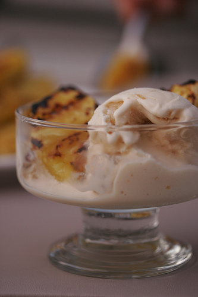

Grilled Pineapple with Praline Ice cream
Grilled dessert!! Not too many people would think of summer grilling & dessert together. Grilling summer fruits is one of my favorite things to do. i was inspired after i saw my friend chef Vikas Khanna grilled peaches in a Tandoor clay oven at his restaurant in New York City. The flavors were outstanding! There is no recipe for grilled pineapple; I take a whole pineapple, cut off the top and bottom, remove the outside bark, then slice it. I cut it in half, but I dont worry about the core, as that gives you a spot to hold the slice. Even thou as you can see i have taken the core off! I like the slices to be maybe half an inch thick. Then put the slices over a medium-hot fire and cook until they are nicely caramelized, then turn them over and do the same. It is that simple. Serve it warm with your choice of Ice cream!